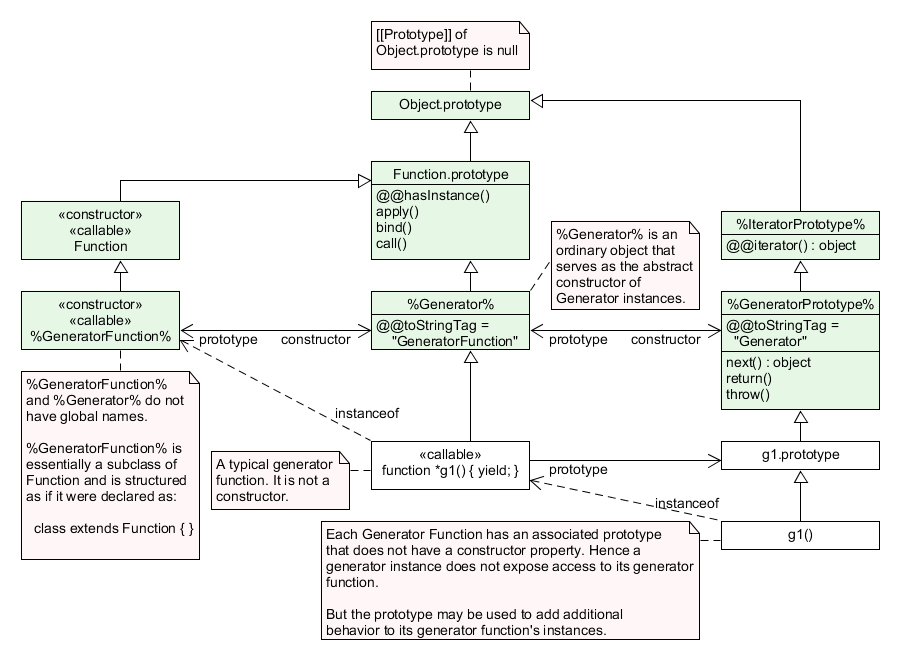

[Javascript] 제너레이터 알아보기 (w. Iterator, 배열)
서론
CS 스터디에서 8월 21일 발표한 Generator에 대해 정리한 문서를 블로그에 공유하고자 한다.
이번 글에서는 크게 다음과 같은 주제를 다룬다.
제너레이터가무엇인지자바스크립트에서제너레이터는어떻게 구현되어 있는지제너레이터와 이를 생성하는제너레이터 함수들의prototype은 어떠한지자바스크립트의제너레이터는 어떤 특징이 있고, 이를어떤 케이스에응용할 수 있을지
제너레이터란?
제너레이터란, 반복 루프의 동작을 제어 하는데 사용 가능한 루틴 을 말합니다.
루틴: 프로그램 실행 동안반복적으로 호출 및 사용하도록 의도된코드 시퀀스입니다. #
모든 제너레이터는 반복자(Iterator)이며, 값의 시퀀스를 생성한다는 점에서 배열을 반환하는 함수와 유사하지만 한 번에 값을 모두 반환하지 않고 한 번에 하나의 값을 생성한다는 점이 다릅니다.
제너레이터는 1975년 CLU라는 언어에서 처음 등장했으며, 이후 Python, C#, Ruby, PHP 등 다양한 언어에서 구현되어 사용되고 있습니다.
Javascript의 제너레이터
Javascript에서 제너레이터는 ES6에서 도입되었습니다.
제너레이터는 제너레이터 함수에 의해 생성되는 객체로 실행이 연속적이지 않은 함수의 실행 결과 값을 반복(Iterator) 형태로 반환하는 객체입니다.
제너레이터 객체는 iterable, iterator 프로토콜을 만족하는 객체로, Iterator 클래스의 서브 클래스입니다.
따라서 Iterator의 next() 메서드를 상속받기 때문에, 이를 통해 동작 흐름을 진행 및 중단시키며 값을 생산해내는 용도로 주로 사용됩니다.
// ReferenceError: Generator is not defined
const abc = new Generator();
// function* 키워드의 익명함수를 통한 제너레이터 생성
const abcd = (function* a(){})();
console.log(abc.constructor);
// GeneratorFunction {prototype: Generator, Symbol(Symbol.toStringTag): 'GeneratorFunction'}
제너레이터는 오직 제너레이터 함수에 의해서만 생성되며, Generator()와 같은 특정한 생성자가 존재하지 않습니다.
또한 제너레이터와 제너레이터 함수는 global한 이름이 없는, 즉 전역 객체(global object)가 아니기 때문에 Generator나 GeneratorFunction과 같은 키워드로 접근할 수 없습니다.
function* gen() {yield 10;}
gen.prototype === gen().__proto__; // true
제너레이터 함수가 호출되면, 그 함수의 prototype은 함수 호출의 결과로 생성된 객체, 즉 제너레이터의 prototype이 됩니다.
따라서 Generator.prototype으로 언급되는 것들은 실제로 제너레이터 함수의 프로토타입의 프로토타입 입니다. 즉, GeneratorFunction.prototype.prototype 인 것입니다.
제너레이터 함수(GeneratorFunction)
제너레이터 함수란, 함수 호출 결과값으로 제너레이터를 반환하는 일련의 함수들을 말합니다.
제너레이터 함수는 function* 또는 Generator의 프로토타입([Generator].prototype)에서 접근할 수 있는 GeneratorFunction()에 의해서만 생성될 수 있습니다.
function* abc() {
yield 10;
}
console.log(abc.__proto__)
// === 출력 ===
// GeneratorFunction {prototype: Generator, Symbol(Symbol.toStringTag): 'GeneratorFunction'}
// constructor: ƒ GeneratorFunction()
// prototype: Generator {Symbol(Symbol.toStringTag): 'Generator', next: ƒ, return: ƒ, throw: ƒ}
// Symbol(Symbol.toStringTag): "GeneratorFunction"
// !!!주의할 점!!!
// 제너레이터 함수의 프로토타입을 확인하겠다고 [GeneratorFunction].prototype을 확인하게 되면
// 이는 GeneratorFunction.prototype.prototype,
// 즉 진짜 GeneratorFunction.prototype이 갖고 있는 prototype이라는 프로퍼티를 확인하게
// 되는 것이므로 __proto__로 확인해야 한다!
제너레이터 함수들은 모두 GenerationFunction 객체이며, GeneratorFunction은 prototype에 생성자인 constructor와 제너레이터들이 물려받을 프로토타입인 prototype 프로퍼티를 갖고 있습니다.
참고로 화살표 함수의 경우, yield 키워드를 포함할 수 없기 때문에 제너레이터 함수를 만드는데 사용할 수 없습니다. (다만 내부에 제너레이터 함수를 포함하는 경우, 해당 제너레이터 함수 내부에서는 yield 키워드를 사용할 수 있습니다.) #
제너레이터 프로토타입
function* abc() {
yield 10;
}
console.log(abc.prototype) // Generator {}
GeneratorFunction.prototype에는 모든 제너레이터 함수들이 공유하는 prototype 프로퍼티가 존재합니다.
이 프로퍼티는 제너레이터 함수를 통해 생성된 제너레이터의 프로토타입, 즉 Generator.prototype 입니다.
다르게 말하자면, 제너레이터 함수를 통해 생성된 제너레이터는 함수의 prototype 프로퍼티를 직접 상속합니다.
기본적으로 제너레이터의 프로토타입에는 부모인 Iterator 객체로부터 물려받은 3가지 메서드가 존재합니다.
프로토타입 구조도

출처: ECMAScript® 2016 Language Specification (ecma-international.org)

출처: GeneratorFunction.prototype.prototype - JavaScript | MDN (mozilla.org)
next(value) 문서
function* gen() {
yield 1;
yield 2;
yield 3;
}
const g = gen();
g.next(); // { value: 1, done: false }
g.next(); // { value: 2, done: false }
g.next(); // { value: 3, done: false }
g.next(); // { value: undefined, done: true }
next()는 호출 시, 제너레이터 함수 내용에서 함수 끝에 다다르거나, 다음 yield을 만날 때까지 계속 진행하도록 하는 함수입니다.
또한, next() 메서드는 항상 done 과 value 두가지 프로퍼티를 갖는 객체를 반환합니다.
done은 만약 return 문 또는 함수의 끝에 다다랐다면 true이며, 만약 함수가 더 값을 생성할 수 있는 경우 false입니다.
value는 제너레이터 함수 내용을 진행해 마주한 yield 키워드 또는 return 키워드에 달려있는 표현식의 결과 값입니다.
function* gen() {
while (true) {
const value = yield;
console.log(value);
}
}
const g = gen();
g.next(1); // { value: undefined, done: false }을 반환합니다.
// 첫 번째 next() 호출에 전달된 인자는 무시되고 undefined로 전달됩니다.
g.next(2); // Returns { value: undefined, done: false }
// console에 2가 출력됩니다.
만약 next() 메서드에 인자값을 전달했다면, 해당 값은 next()가 원래 반환했어야 할 yield 표현식의 값을 대신합니다. 예를 들어, variable = yield [표현식]이라는 코드가 있다면, next()에 전달된 값은 variable에 yield [표현식] 대신 할당되는 것입니다.
return() 문서
function* gen() {
yield 1;
yield 2;
yield 3;
}
const g = gen();
g.next(); // { value: 1, done: false }
g.return("foo"); // { value: "foo", done: true }.
// return 문을 호출했기 때문에 이후의 흐름은 진행되지 않으며, 제너레이터 내용은 종료됩니다.
g.next(); // { value: undefined, done: true }
return()은 호출시 제너레이터 내용의 현재 중단된(suspended) 위치에 return문을 삽입한 것처럼 동작하여, 제너레이터를 종료하고 try..finally 블록이 있다면 해당 블록의 작업을 수행하도록 합니다.
next()와 마찬가지로, done과 value 두 프로퍼티를 갖는 객체를 반환합니다.
done의 경우 “제너레이터가 try..finally 블록 내부에서 일시 중단되었으며, finally 블록에 yield 표현식이 존재하는 경우” 에만 true이며, 이외의 경우에는 false 값을 갖습니다.
value는 웬만한 경우 return()에서 주어진 인자값이지만, “try...finally 블록에 yield 표현식이 존재하는 경우, finally 블록에 yield 또는 return되는 값” 을 반환할 수도 있습니다.
return() 역시 인자값을 전달 받을 수 있는데, 아무 값도 주어지지 않았다면 undefined를, 그렇지 않다면 인자 값을 반환하게 됩니다.(반환할 수 있는 경우)
function* gen() {
yield 1;
try {
yield 2;
yield 3;
} finally {
yield "cleanup";
}
}
const g1 = gen();
g1.next(); // { value: 1, done: false }
// try...finally 블록에 진입하기 전, return 문을 호출해 제너레이터 실행이 중단됩니다.
g1.return("early return"); // { value: 'early return', done: true }
const g2 = gen();
g2.next(); // { value: 1, done: false }
g2.next(); // { value: 2, done: false }
// 이 위치에서 제너레이터 진행은 `yield 2`와 `yield 3` 사이
// 즉, try...finally 블록 내부에서 중단되어 있습니다.
// 따라서 return 문을 호출해도, finally 블록에 yield 표현식이 존재해
// 해당 표현식의 값을 반환하게 됩니다.
g2.return("이른 return"); // { value: 'cleanup', done: false }
// 이전에 return 문에 전달한 인자는 보존되어, 이후 호출한 next() 문에서 반환됩니다.
// 그리고 제너레이터는 완료 상태(completed state)에 진입합니다.
g2.next(); // { value: 'early return', done: true }
// 완료 상태에 진입했어도, 여전히 return() 호출은 가능하며, 인자 역시 정상적으로 전달되어 동작합니다.
g2.return("not so early return"); // { value: 'not so early return', done: true }
위 코드는 try...finally 블록이 존재하는 제너레이터에서, return문을 try..finally 블록 진입 전/진입 후 호출한 케이스와 그에 따른 동작을 설명하고 있습니다.
throw(exception) 문서
throw()은 호출시 제너레이터의 현재 중단된 위치에 throw 문을 삽입해 제너레이터에게 오류가 발생했음을 알려 오류 처리 및 (필요하다면)정리(cleanup) 작업을 수행하도록 합니다.
인자로 던질 예외인 exception을 필수로 전달해야하며, exception은 원활한 디버깅을 위해 Error의 인스턴스로 만드는 것이 좋습니다.
만약 던져진 exception이 try...catch문에 의해 잡히고, 재개될 경우 next(), return()과 마찬가지로, done과 value 두 프로퍼티를 갖는 객체를 반환합니다.
반대로, exception 이 잡히지 않는다면 이는 제너레이터 외부로 던져집니다.
function* gen() {
while (true) {
try {
yield 10;
} catch (e) {
console.log("Error caught!");
}
}
}
const g = gen();
g.next();
// { value: 42, done: false }
g.throw(new Error("Something went wrong"));
// "Error caught!"
// { value: 42, done: false }
위 코드는 next()문을 통해, 먼저 try-catch 구문 내에서 중단되게 한 뒤 에러를 throw해 catch문에서 처리되도록 동작합니다.
제너레이터의 동작 방식 참고 글
제너레이터 함수는 내부에 특수한 연산자인 yield를 포함할 수 있습니다. 이를 통해 제너레이터는 동작을 중지 및 재개할 수 있습니다.
제너레이터가 갖고있는 next() 메서드를 호출하면, 가장 가까운 yield [값] 문을 만날 때 까지 제너레이터 함수에 기술된 동작이 계속 진행됩니다.
이후 yield [값] 문을 만나면 실행을 중단하고 [값]을 외부에 반환합니다.([값]을 생략할 수도 있는데, 이때는 undefined가 반환됩니다.)
function* abc() {
yield 10; // 1
return 5; // 2
}
const gen = abc();
gen.next(); // 1번을 실행. {value: 10, done: false} 을 반환
gen.next(); // 2번를 실행. {value: 5, done: true} 를 반환
gen.next(); // {value: undefined, done: true} 를 반환
제너레이터의 실행은 제너레이터 함수의 끝에 다다를 때 까지 계속되며, 함수의 마지막 yield또는 return문 이후에는 {value: undefined, done: true} 객체만 반환하게 됩니다.
제너레이터의 Iterable 특성
제너레이터는 Iterator의 서브 클래스이므로 상기한대로 Iterable 프로토콜을 만족하며, for..of 문을 사용할 수 있습니다.
function* abc() {
yield 1;
yield 2;
return 3;
}
const gen = abc();
for(let a of gen) {
console.log(a); // 1, 2 출력됨
}
다만, 주의할 점이 있는데 for..of문을 사용할 때 반환된 값이 done:true인 경우 값(value)이 무시된다는 것입니다.
따라서 마지막 값까지 출력되길 원한다면 return 보다 yield를 사용해 값을 반환해야 합니다.
또한, 끊임없이 값을 생성하는 제너레이터를 for..of문에서 사용할 경우 무한 반복으로 스크립트가 멈추므로, for문 내부에 break 또는 함수 내부에 return문을 포함해야 합니다.
function* abc() {
yield 1;
yield 2;
return 3;
}
const arr = [0, ...abc()];
console.log(arr); // (3) [0, 1, 2]
또한 제너레이터는 위처럼 전개 구문(Spread Syntax)을 사용할 수 있습니다.
yield 위임하기(제너레이터 컴포지션)
제너레이터에서 yield* 연산자를 사용하면, 다른 제너레이터 또는 이터러블 객체(즉, 이터레이터)에게 yield를 위임할 수 있습니다.
const gen = (function* () {
yield* [1, 2, 3, 4, 5]; // 참고: 자바스크립트에서 배열은 Iterable 객체이다.
})(); // IIFE(즉시실행함수표현) 으로 제너레이터를 바로 할당한다.
for(const v of gen) {
console.log(v); // 1, 2, 3, 4, 5가 각각 차례대로 출력된다.
}
const gen2 = (function* () {
yield* (function* () {yield* [1, 2, 3, 4, 5]})(); // 배열에 yield를 위임한 제너레이터(IFFE 표현을 통해 생성한)에 다시 yield를 위임한다.
})();
for(const v of gen2) {
console.log(v); // 1, 2, 3, 4, 5가 각각 차례대로 출력된다.
}
따라서 위 예시처럼, 배열과 같은 이터러블 객체에 yield를 위임할 수도 있고, 다른 제너레이터에게 yield를 위임할 수도 있습니다.
위임할 경우 이터레이터가 닫힐 때까지(즉, done: true 가 될 때 까지 함수를 진행하며, 해당 이터레이터가 반환한 값을 반환하게 됩니다.
yield* 키워드를 사용하게 되면, 먼저 해당 이터레이터를 [Iterator]()를 통해 얻어오고, 이후 next() 메서드를 반복적으로 호출합니다.(이때, 제너레이터의 next()에 인수가 있다면 이를 이터레이터의 next()에 전달합니다.) 이후 이터레이터의 next()가 반환한 객체와 동일한 객체를 반환합니다.
- 이때, 첫 번째
next()호출의 인자는 무조건 무시됩니다. 즉,undefined로 전달됩니다.
const iterable = {
[Symbol.iterator]() {
let count = 0;
return {
// Iterable은 Iterator의 next, return, throw 동작을 아래와 같이 재정의한 객체입니다.
next(v) {
console.log("next called with", v);
count++;
return { value: count, done: false };
},
return(v) {
console.log("return called with", v);
return { value: "iterable return value", done: true };
},
throw(v) {
console.log("throw called with", v);
return { value: "iterable thrown value", done: true };
},
};
},
};
function* gf() {
yield* iterable;
return "gf return value";
}
const gen = gf();
console.log(gen.next(10));
// next called with undefined; 첫 번째 next() 호출의 인자는 무조건 무시됩니다.
// { value: 1, done: false }
console.log(gen.next(20));
// next called with 20
// { value: 2, done: false }
console.log(gen.return(30));
// return called with 30
// { value: 'iterable return value', done: true }
반환 값 위임은 제너레이터의 return(), throw()문에도 동일하게 적용되어, 내부 제너레이터가 throw()/return() 문을 호출할 경우 외부 제너레이터 역시 동일하게 해당 함수를 호출하며 인자 역시 내부의 것과 동일하게 전달됩니다.
yield를 통한 값 주고받기
상기한대로, 제너레이터는 yield를 통해 값을 생산(바깥으로 전달)하고, next() 메서드의 매개변수를 통해 내부로 값을 전달받기도 합니다.
이를 활용해, 제너레이터와 값을 주고 받는 것이 가능합니다.
function* gen() {
// yield 표현식을 통해 "2 + 2 = ?"라는 문자열을 밖으로 내보냅니다.
let result = yield "2 + 2 = ?"; // (#)
console.log(result);
}
let generator = gen();
// yield 표현식을 통해 반환된 객체의 값을 추출합니다.
// 다시 한 번 얘기하자면, 첫 번째로 호출한 next()는 인자 값을 무시하기 때문에
// 여기서 인자값을 넘겨주지 않습니다.
let question = generator.next().value; // "2 + 2 = ?";
// 제너레이터는 동작 수행 후 `(#)` 위치에서 동작을 잠시 멈춥니다. (suspended)
// next(value)를 호출해 내부로 값을 전달합니다.
// 아래의 경우 인자로 주어진 4가, 제너레이터 함수 내부의 result에 대입됩니다.
// 따라서 console.log()에 4가 전달됩니다.
generator.next(4); // "4"
참고
- ECMAScript® 2016 Language Specification
- 제너레이터 (javascript.info)
- Understanding JavaScript Generators - CodeProject
- yield - JavaScript | MDN (mozilla.org)
- Generator - JavaScript | MDN (mozilla.org)
- GeneratorFunction.prototype.prototype - JavaScript | MDN (mozilla.org)
- Generator.prototype.next() - JavaScript | MDN (mozilla.org)
- Generator.prototype.return() - JavaScript | MDN (mozilla.org)
- Generator.prototype.throw() - JavaScript | MDN (mozilla.org)